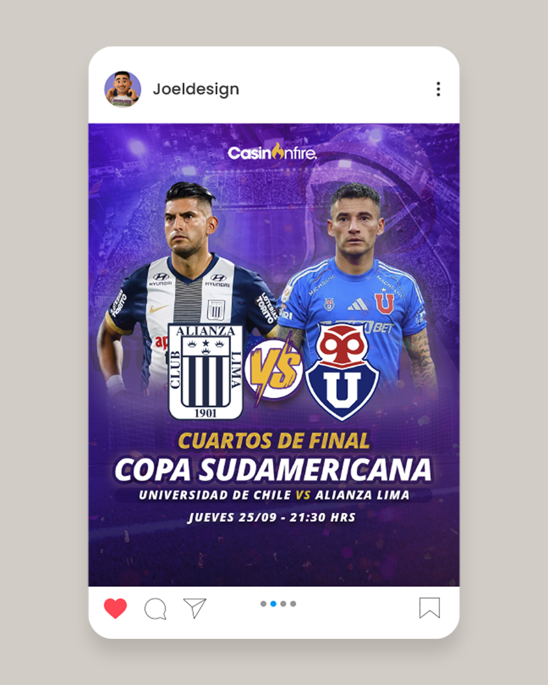
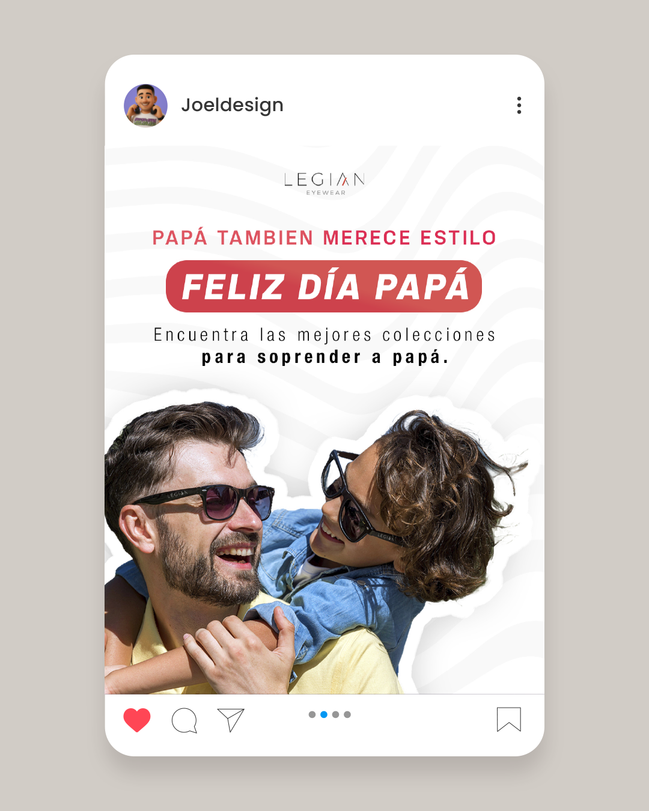
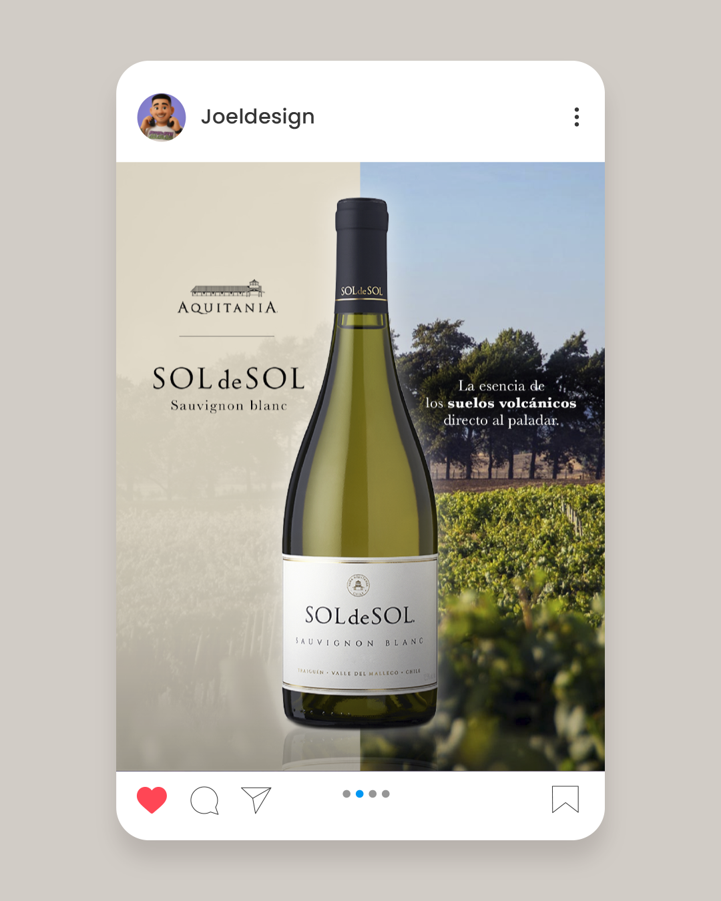
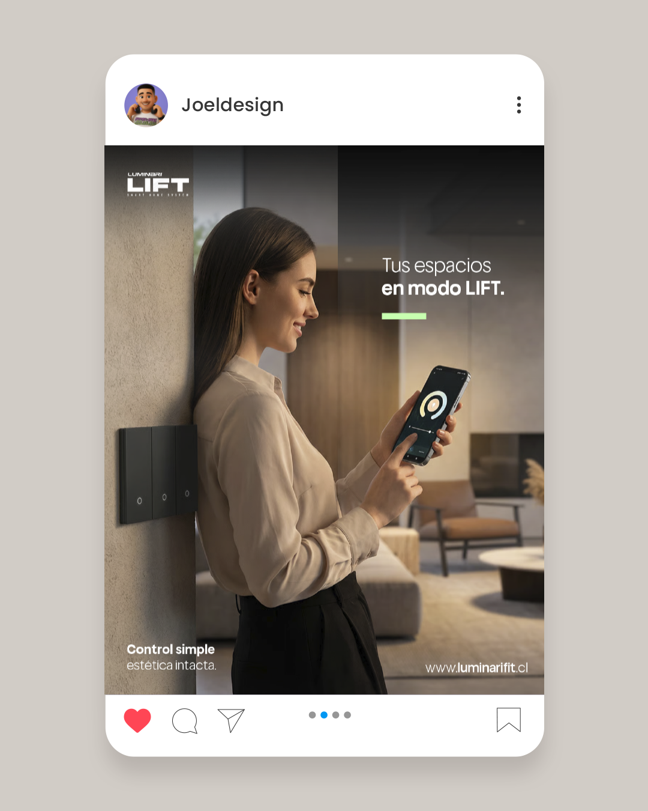
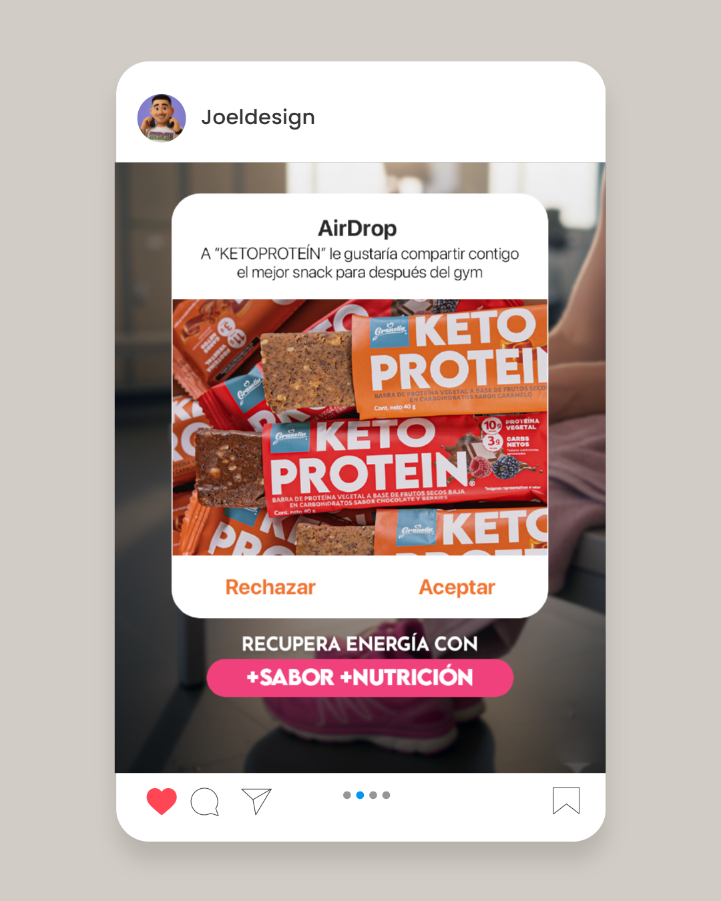
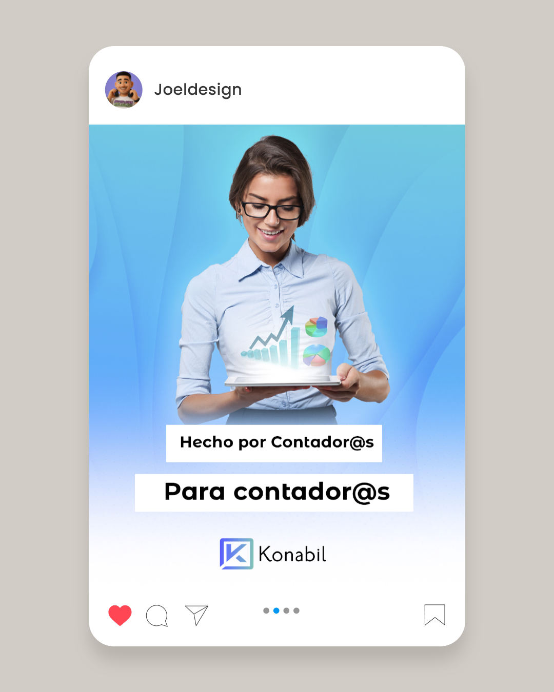
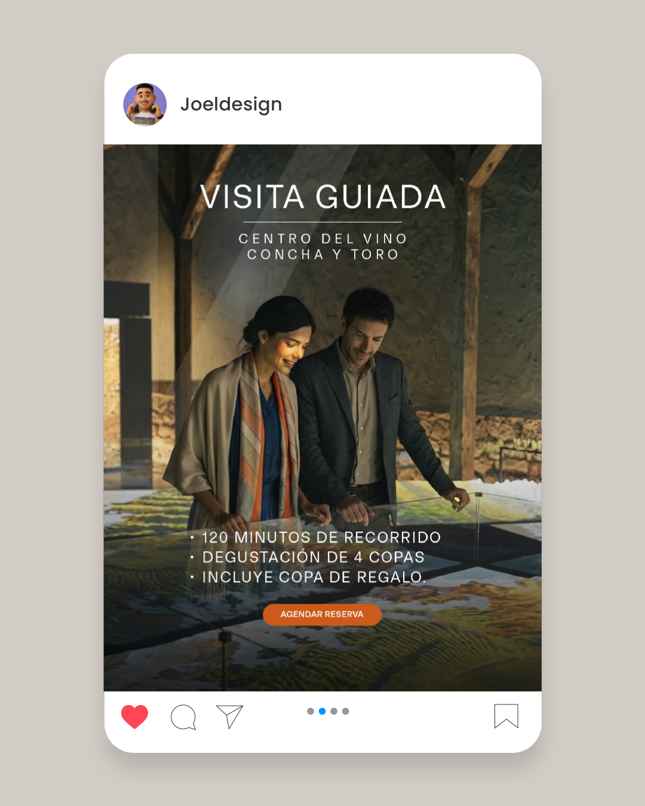
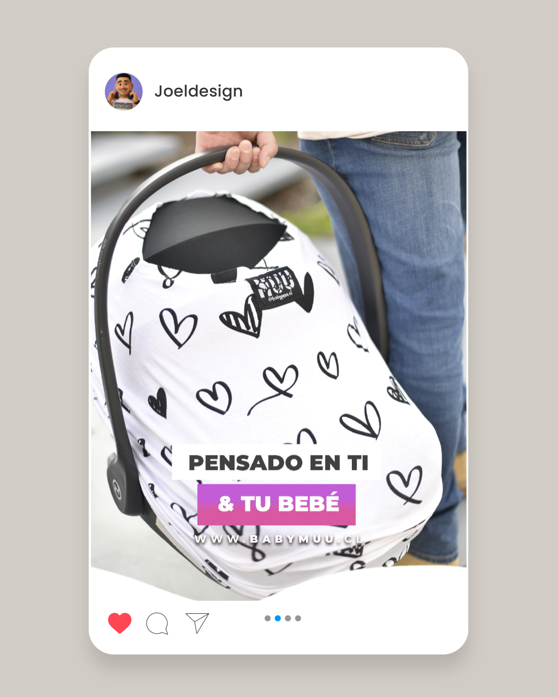
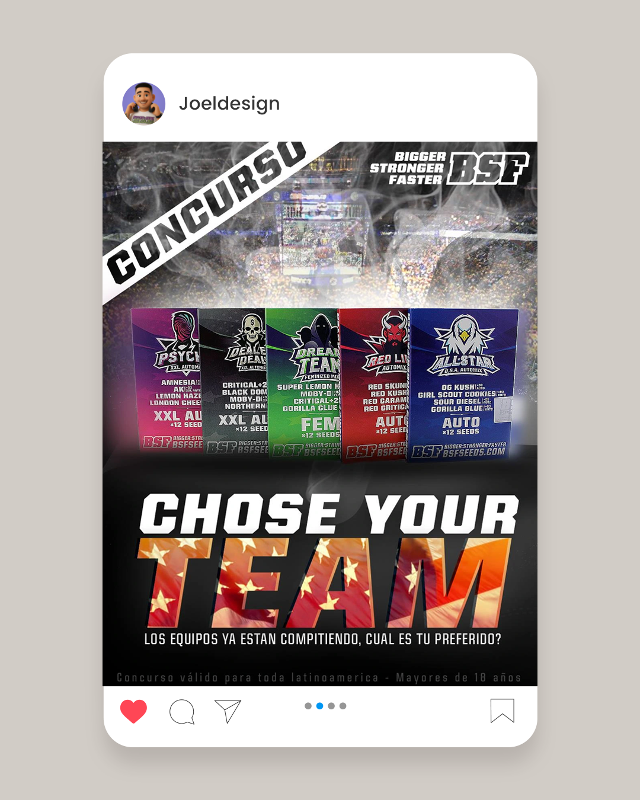
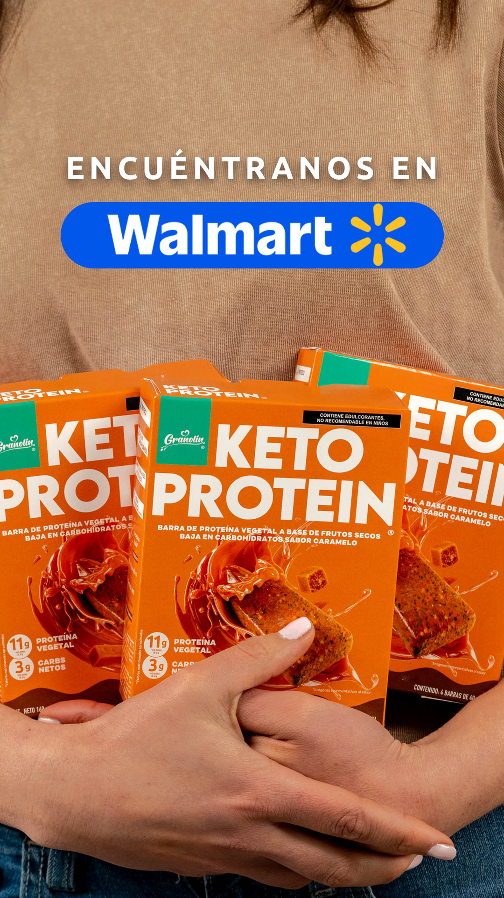

Developing content and visual communication for social media across different brands and objectives. Each piece responds to a clear strategy, combining design, narrative, and visual consistency to generate impact and recognition. The result is campaigns and graphics that connect with the audience and strengthen each brand's digital presence.









Stories
Diseño de contenido efímero pensado para captar la atención rápidamente. Optimizamos recursos visuales, tipografía y llamadas a la acción específicamente para el formato vertical de Instagram para maximizar el engagement y el retorno inmediato.

Confeccionando una presencia profesional pero cercana en LinkedIn. Desarrollamos marcos visuales cohesivos para perfiles ejecutivos y páginas de empresa, mezclando la estética corporativa con diseños digitales modernos.
Tiktok & reels
Creación de contenido en video nativo y acelerado diseñado para los feeds algorítmicos. Traducimos la identidad de la marca en motion graphics dinámicos que detienen el scroll y fomentan que se comparta orgánicamente.